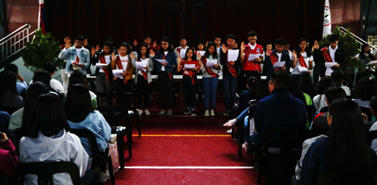

UB VISION
In pursuit of perfection, the University of Baguio is committed to provide balanced quality education by nurturing academic excellence, relevant social skills, and ethical values in a fun learning environment.
UB MISSION
The University of Baguio educates individuals to be empowered professionalism the global community.
UB SCIENCE HIGH SCHOOL MISSION
The UB Science High School educates individuals to be empowered 21st century citizens in the global community.

UB SCIENCE HIGH SCHOOL OBJECTIVES (Revised 2018)
The pleasant academic culture of the UB Science High School aims to produce a graduate who:
1.Exemplifies academic excellence emphasizing on critical thinking and effective communication;
2. Pursues a career to be a productive member of the society;
3. Values human dignity and respects human rights;
4. Generates scientific researches for personal and community development;
5. Advocates sustainable outreach programs for the community and the environment;and
6. Manifests the attributes of a dynamic and responsible leader.
UB SCIENCE HIGH CORE VALUES
Competence + Integirty = Service
Excellence Spirituality Gratitude
Responsibility Humility Team Spirit
Perseverance Compassion